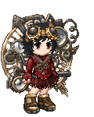

floral Today at 4:00 PM
Hi, I am floral, and i make either very funny or very sad comics for the internet
svvord Today at 4:01 PM
about since when have you existed on the internet?
floral Today at 4:03 PM
I believe I made my first deviantart account around 12, which was my very first actual alias.
So...that would be 15 years?
svvord Today at 4:03 PM
was that generally where you spent most of your time online?
floral Today at 4:07 PM
Well, when I first discovered the internet around 9 I mostly played the games on the Disney and Barbie websites. But yes, with an actual alias I was mostly browsing deviantart. Especially because there were a lot of OCTs around that time. I think I spent quite a bit of time on fanfiction.net too around that same time.
svvord Today at 4:07 PM
what are OCTs?
floral Today at 4:11 PM
OCT stands for "Original Character Tournament" and were HUGE for a time on deviantart. Essentially a group of people would create a tournament setting that was usually an island or a city of some sort and people would apply with a reference sheet of their character or even in some cases an intro comic. After contestants were chosen, they would be paired off with other contestants in rounds. Both artists would create comics depicting their character winning and whatever the judges chose as the best became "canon" to the tournament and they'd move on to keep fighting.
Some of these tournaments had like subplots created by the hosts that people could integrate into their comics, it was honestly a very collaborative comic experience.
svvord Today at 4:14 PM
that's really cool! were there certain kinds of interactions that came out during these?
floral Today at 4:19 PM
It was very much like a sporting event, most of your interaction was showing support for your favorite character in the comments section, though I am sure some people got too heated about certain people losing and would make fusses. I didn't interact with strangers too much on deviantart on a friend level because I was very much in the "stranger danger" mindset and would not touch chatrooms.
svvord Today at 4:20 PM
Haha probably smart
floral Today at 4:21 PM
I still had this one older guy hit me up for a pregnancy kink commission when I was 13 though, because I drew some Naruto girls carrying my favorite ships babies.
svvord Today at 4:21 PM
oh my god
floral Today at 4:21 PM
I freaked out and told my mom lol
svvord Today at 4:21 PM
everytime i remember what deviantart was like i always black out all of Those Parts
omg
floral Today at 4:22 PM
I don't think she really grasped what was happening and just said to say no.
svvord Today at 4:22 PM
LMAO Fair Enough
About when did you think you started interacting with others online more?
floral Today at 4:26 PM
Well, my middle school friends were even more online than I was and introduced me to a lot of things. It's because of them I started a Gaia account at around 8th grade. I definitely started being less scared at that point and would actively participate in forum art contests or even do commission threads for stupid gaia currency. There was a time we all got very much into the rp forums, and my friend started her own psychic academy one and we made older online friends through that, which unsurprisingly was a lot of drama.
I really actively started interacting with people that had no connection to my irl when I joined this comic website in junior year of high school, which was sort of oct like in which you applied with your character and could challenge other people's to a comic face off that would be voted on by the community. I tried being very active in the chatroom then but I didn't make any lasting friendships. After that I mostly stuck to tumblr mutuals from fandoms.
svvord Today at 4:32 PM
Do you think there was a difference in what you did or who you talked to when you weren't with your irl friends?
floral Today at 4:37 PM
Their wasn't such a big difference in what I did back then, but the people I were talking to were almost always a bit older and I think maybe I tried to act a bit more mature than I would with my irl friends to fit in better.
It was moreso when I started to come to terms with sexuality and identity stuff that my irl and my online fractured. Back then I didn't know anything about myself and actively kept myself in the dark, so I didn't feel the need to be too different than I was with my irl friends, who i am sure all kinds of LGBT now themselves.
svvord Today at 4:40 PM
When do you think that shift started to happen? Or when you realized that shift?
floral Today at 4:44 PM
Well the VERY first instance was when I had a sexy, yaoi boy Shino Abarame I drew myself as a desktop background and it obviously made the neighbor boy uncomfortable. After that I was like, "some things are for online." Seriously though, I think getting involved with that fandom element of boyxboy was the shift which happened in middle school too. It just didnt seem so because 1. all my irl friends were involved too and 2. I had been actively told be the internet it didn't say anything about me personally
After I started talking about being bi, very cautiously, on my tumblr around 4 years ago is when my worries stopped being "oh i dont want my family or certain irl ppl to know my interests," to "this space is sensitive personally to me and I need to protect it"
svvord Today at 4:48 PM
So your tumblr became a safe space for yourself, but one you had to make sure to keep away from offline people?
floral Today at 4:49 PM
Yes, definitely. I might have a few friends my age follow but I made separate art tumblrs for family and people I didn't know well.
It wasn't too hard to do, since after high school the majority of people I'd know were almost exclusively instagram or facebook users.
svvord Today at 4:50 PM
Are you at all active on those sites?
floral Today at 4:51 PM
Definitely not! Facebook is mostly used so my old coworkers can tag me in things and insta has never really garnered my interest.
svvord Today at 4:53 PM
Haha I feel that with instagram, it feels like such a weird system with everything being based on an image
floral Today at 4:54 PM
It is!! And you can't even post your art from your desktop, you have to get it on your phone first
A lot of people I know use it for each other but especially for celebrity culture which is a hard pass
svvord Today at 4:55 PM
Like they follow celebrities mostly?
floral Today at 4:56 PM
Yes, maybe some aesthetic accounts but definitely influencers and famous people mostly.
svvord Today at 4:57 PM
What would you say attracted you the most to tumblr? Or kept you using it for so long?
floral Today at 4:59 PM
Tumblr had an extremely active fandom culture, funny posts, and was honestly the best suited for artists with the tagging system and the formatting of images.
It felt like tumblr absorbed the creative culture of deviantart, while also making it 100% easier to interact with others and made being mutuals feel like it mattered.
svvord Today at 5:00 PM
Did you talk to your mutuals a lot?
floral Today at 5:03 PM
I started to when I was in the fandom around 7 years ago? My Homestuck art never really garnered the attention where I was interacting with a lot of people but this fandom was small enough we recognized each other very quickly.

svvord Today at 5:05 PM
would you say you still prioritize tumblr?
floral Today at 5:07 PM
Absolutely not! I am almost never on there but to repost things from twitter. After the nsfw ban it felt like the entire community moved to twitter and I am very much a "1 main platform" type person.
svvord Today at 5:07 PM
i definitely feel that
it's so stressful with how many platforms people are on
floral Today at 5:09 PM
I don't know how some people do it honestly. It never feels like I have the energy to equally spend time on multiple platforms.
svvord Today at 5:10 PM
as an artist do you tend to have trouble with using social media for promoting your work?
floral Today at 5:13 PM
With twitter it's become especially hard considering how finnicky the algorithm is. Practically no tagging system means you depend on your followers to expand your works visibility but if you aren't consistently posting there's a good chance you aren't even ending up on their feeds. I don't think I ever thought about "optimal posting times" until using this platform full time, it's crazy.
svvord Today at 5:14 PM
do you think The Algorithm has altered how you post or make work?
floral Today at 5:19 PM
I definitely have to consider what looks more shareable from a first glance than ever before, along with posting at the "right" times. I post comics for instance and I have now started to not only make sure that I don't link my website in the first tweet since I have heard the algorithm will hide those tweets but also I try to include a colored cover piece with two other images. Because the color helps draw the eye regardless of what ever the damn crop does to your work but also if you have 3 images in one post at least the first will be fully visible.
The more shares you get right after posting, I believe, just increases the visibility overall. So I've had to think a lot on that. I also don't promote my work through retweets like I would on tumblr because again, the website will Get You.
svvord Today at 5:21 PM
do you think twitter's also altered how you interact with others online?
floral Today at 5:24 PM
I am definitely interacting more with people than I did on tumblr, I feel more encouraged to comment on art and to make jokes off of people statuses. I feel much more on guard too though, regarding replies to posts. Stream of consciousness or reactive posting feels so heavily encouraged versus tumblr that I feel the need to be more aware of what I'm posting and how I respond to others.
Before all you had to do is just not answer an anon and replies to posts couldn't be easily answered anyways so it was whatever, but twitter the main point is to interact.
I feel like I am supporting people on a more personal level but also the vulnerability and potential to act on emotion is more prevalent
svvord Today at 5:28 PM
it's definitely a double edged sword
floral Today at 5:30 PM
Yeah! The Algorithm putting things intentionally on the tl to make people mad doesn't help either.
svvord Today at 5:31 PM
Did you have anything else you wanted to add or talk about?
floral Today at 5:33 PM
Hmmm... I think one thing I'd like to say about online identity is that over the years since having more people follow me for art and the general public's acceptance of social media is that who I am online is very much a different facet of a public persona. There are very different things that are "safe" for me to share between a conservative irl setting and a progressive online one, but it still takes a fair amount of self awareness and self regulation of boundaries to maintain.
I think some people have the impression that online spaces are where you are your most honest self but I think the idea of all your posts being representative of your "truth" is just another means of performing. The strangers online don't exactly know you better, they just know different aspects to what makes a very complex and ever evolving individual.
That's at least what ive come to understand, both through curating my own experience but also in trying to find empathy and keep perspective when interacting with others online.
svvord Today at 5:34 PM
that's really true!
floral Today at 5:36 PM
Lastly, and i don't wanna sound weirdly preachy or anything like that as someone who is not an expert on the subject; but I think as we continue to be Online as a species we have to actively impart conflict resolution and de-escalation habits into our communities and general behavior. We depend a lot on instinctual cues to access when it's time to step away irl, and the fact we are now available to so many more types of personalities than we're used to and otherwise would choose to be around, we have to recognize our own abilities in protecting ourselves and the way we choose to act. I don't know, maybe that doesn't need to be said but it does feel like regardless of irl or online people tend to forget you have no control over any person but yourself and there is power in that.
continue scrolling